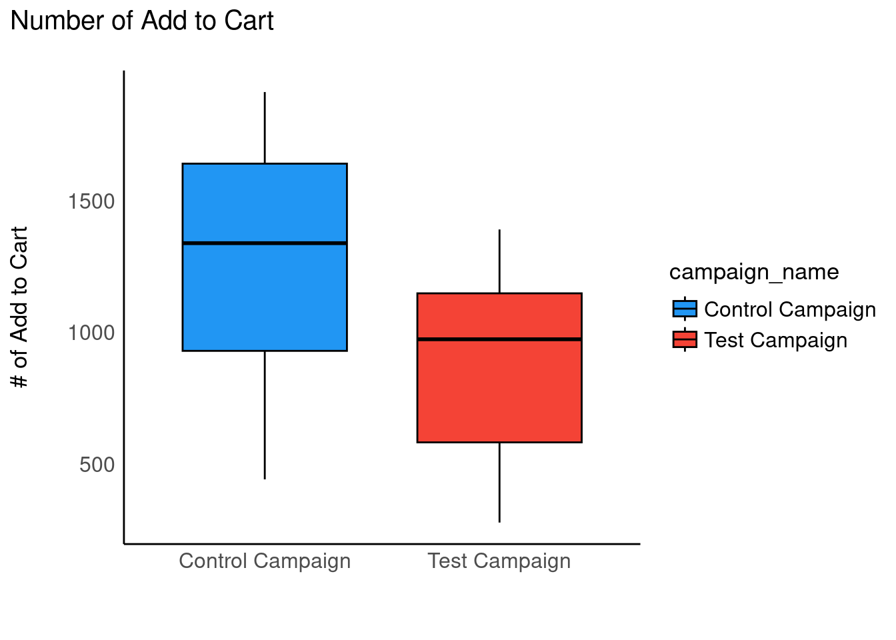

AB Test Results
Description of the Problem
“A company recently introduced a new bidding type,”average bidding”, as an alternative to its exisiting bidding type, called “maximum bidding”. One of our clients, ….com, has decided to test this new feature and wants to conduct an A/B test to understand if average bidding brings more conversions than maximum bidding.
The A/B test has run for 1 month and ….com now expects you to analyze and present the results of this A/B test.” - Kaggle Dataset
Framework for Analysis
Primary Objective: Determine whether the test campaign was effective in increasing purchases.
Hypothesis: Test campaign will increase purchases.
Primary Metric: Number of purchases
Business Metrics: Spend
Secondary Metrics: Cart efficiency, impression efficiency, number of website clicks, number of content views, reach, number of impressions
Dataset
The data is coming from a Kaggle dataset that can be found here.
Load Data
Code
control_df %>% str()spc_tbl_ [30 × 10] (S3: spec_tbl_df/tbl_df/tbl/data.frame)
$ Campaign Name : chr [1:30] "Control Campaign" "Control Campaign" "Control Campaign" "Control Campaign" ...
$ Date : chr [1:30] "1.08.2019" "2.08.2019" "3.08.2019" "4.08.2019" ...
$ Spend [USD] : num [1:30] 2280 1757 2343 1940 1835 ...
$ # of Impressions : num [1:30] 82702 121040 131711 72878 NA ...
$ Reach : num [1:30] 56930 102513 110862 61235 NA ...
$ # of Website Clicks: num [1:30] 7016 8110 6508 3065 NA ...
$ # of Searches : num [1:30] 2290 2033 1737 1042 NA ...
$ # of View Content : num [1:30] 2159 1841 1549 982 NA ...
$ # of Add to Cart : num [1:30] 1819 1219 1134 1183 NA ...
$ # of Purchase : num [1:30] 618 511 372 340 NA 764 499 462 501 734 ...
- attr(*, "spec")=
.. cols(
.. `Campaign Name` = col_character(),
.. Date = col_character(),
.. `Spend [USD]` = col_double(),
.. `# of Impressions` = col_double(),
.. Reach = col_double(),
.. `# of Website Clicks` = col_double(),
.. `# of Searches` = col_double(),
.. `# of View Content` = col_double(),
.. `# of Add to Cart` = col_double(),
.. `# of Purchase` = col_double()
.. )
- attr(*, "problems")=<externalptr> Code
names(control_df) %in% names(test_df) [1] TRUE TRUE TRUE TRUE TRUE TRUE TRUE TRUE TRUE TRUECode
test_df %>% str()spc_tbl_ [30 × 10] (S3: spec_tbl_df/tbl_df/tbl/data.frame)
$ Campaign Name : chr [1:30] "Test Campaign" "Test Campaign" "Test Campaign" "Test Campaign" ...
$ Date : chr [1:30] "1.08.2019" "2.08.2019" "3.08.2019" "4.08.2019" ...
$ Spend [USD] : num [1:30] 3008 2542 2365 2710 2297 ...
$ # of Impressions : num [1:30] 39550 100719 70263 78451 114295 ...
$ Reach : num [1:30] 35820 91236 45198 25937 95138 ...
$ # of Website Clicks: num [1:30] 3038 4657 7885 4216 5863 ...
$ # of Searches : num [1:30] 1946 2359 2572 2216 2106 ...
$ # of View Content : num [1:30] 1069 1548 2367 1437 858 ...
$ # of Add to Cart : num [1:30] 894 879 1268 566 956 ...
$ # of Purchase : num [1:30] 255 677 578 340 768 488 890 431 845 275 ...
- attr(*, "spec")=
.. cols(
.. `Campaign Name` = col_character(),
.. Date = col_character(),
.. `Spend [USD]` = col_double(),
.. `# of Impressions` = col_double(),
.. Reach = col_double(),
.. `# of Website Clicks` = col_double(),
.. `# of Searches` = col_double(),
.. `# of View Content` = col_double(),
.. `# of Add to Cart` = col_double(),
.. `# of Purchase` = col_double()
.. )
- attr(*, "problems")=<externalptr> Code
names(test_df) %in% names(control_df) [1] TRUE TRUE TRUE TRUE TRUE TRUE TRUE TRUE TRUE TRUECombine data into single dataframe
Code
df <- rbind(control_df %>% mutate(test = FALSE),
test_df %>% mutate(test = TRUE)) %>%
janitor::clean_names()
rm(control_df, test_df)Format date
Code
df <- df %>%
mutate(date = lubridate::as_date(date, format = "%d.%m.%Y"))Create new variables * Cost per conversion = spend / Number Purchased * Cart efficiency = Number Purchased / Number Added to Cart * Impression efficiency = Number Purchased / Number of Impressions
Code
df <- df %>%
mutate(cost_per_conversion = spend_usd / number_of_purchase,
cart_efficiency = number_of_purchase / number_of_add_to_cart,
impression_efficiency = number_of_purchase / number_of_impressions
)Exploratory Data Analysis
Overall Impact of Campaign
What does the overall impact of test look like on key outcomes (number_of_impressions, reach, number_of_website_clicks, number_of_searches, number_of_view_content, number_of_add_to_cart, number_of_purchase)?
Number of Impressions
Code
ggboxplot(df, x = "campaign_name", y = "number_of_impressions",
fill = "campaign_name") +
ggtitle("Number of Impressions") + ylab("# of Impressions") +
xlab("") + theme_modern() + scale_fill_material()Warning: Removed 1 rows containing non-finite values (`stat_boxplot()`).Control campaign yeiled more overall impressions than the test campaign
Reach
Code
ggboxplot(df, x = "campaign_name", y = "reach",
fill = "campaign_name") +
ggtitle("Reach") + ylab("Reach") +
xlab("") + theme_modern() + scale_fill_material()Warning: Removed 1 rows containing non-finite values (`stat_boxplot()`).Control campaign had greater reach than the test campaign. But the Test campaign could be more targeted and therefore we would expect fewer impressions and lower reach.
Number of Clicks
Code
ggboxplot(df, x = "campaign_name", y = "number_of_website_clicks",
fill = "campaign_name") +
ggtitle("Number of Website Clicks") + ylab("# of Website Clicks") +
xlab("") + theme_modern() + scale_fill_material()Warning: Removed 1 rows containing non-finite values (`stat_boxplot()`).Now we are starting to see the impact of the Test campaign. The test campaign created more clicks than the control
Number of Searches
Code
ggboxplot(df, x = "campaign_name", y = "number_of_searches",
fill = "campaign_name") +
ggtitle("Number of Searches") + ylab("# of Searches") +
xlab("") + theme_modern() + scale_fill_material()Warning: Removed 1 rows containing non-finite values (`stat_boxplot()`).Doesn’t seem to be a large difference in the number of searches. There is also an outlier in the control campaign that should be investigated.
Number Viewed Content
Code
ggboxplot(df, x = "campaign_name", y = "number_of_view_content",
fill = "campaign_name") +
ggtitle("Number of View Content") + ylab("# of View Content") +
xlab("") + theme_modern() + scale_fill_material()Warning: Removed 1 rows containing non-finite values (`stat_boxplot()`).Viewing content looks to overall be the same across campaigns
Number Added to Cart
Code
ggboxplot(df, x = "campaign_name", y = "number_of_add_to_cart",
fill = "campaign_name") +
ggtitle("Number of Add to Cart") + ylab("# of Add to Cart") +
xlab("") + theme_modern() + scale_fill_material()Warning: Removed 1 rows containing non-finite values (`stat_boxplot()`).
The control campaign led to more items added to cart than the test campaign
Number Purchased
Code
ggboxplot(df, x = "campaign_name", y = "number_of_purchase",
fill = "campaign_name") +
ggtitle("Number of Purchase") + ylab("# of Purchase") +
xlab("") + theme_modern() + scale_fill_material()Warning: Removed 1 rows containing non-finite values (`stat_boxplot()`).At first glance these look close, however there is a much larger spread of test campaign performance. Other factors could be contributing.
Spend
Code
ggboxplot(df, x = "campaign_name", y = "spend_usd",
fill = "campaign_name") +
ggtitle("Spend") + ylab("Spend (USD)") +
xlab("") + theme_modern() + scale_fill_material()Are we getting the results we need with a higher spend?
Cost per Conversion
Code
ggboxplot(df, x = "campaign_name", y = "cost_per_conversion",
fill = "campaign_name") +
ggtitle("Cost Per Conversion") + ylab("Cost Per Conversion (USD)") +
xlab("") + theme_modern() + scale_fill_material()Warning: Removed 1 rows containing non-finite values (`stat_boxplot()`).Might be paying more for conversions with the test campaign
Cart Efficiency
Code
ggboxplot(df, x = "campaign_name", y = "cart_efficiency",
fill = "campaign_name") +
ggtitle("Cart Efficiency") + ylab("Cart Efficiency") +
xlab("") + theme_modern() + scale_fill_material()Warning: Removed 1 rows containing non-finite values (`stat_boxplot()`).Looks like we are getting a better conversion and purchase once added to cart
Impression Efficiency
Code
ggboxplot(df, x = "campaign_name", y = "impression_efficiency",
fill = "campaign_name") +
ggtitle("Impression Efficiency") + ylab("Impression Efficiency") +
xlab("") + theme_modern() + scale_fill_material()Warning: Removed 1 rows containing non-finite values (`stat_boxplot()`).Looks like we are getting a slightly better conversion from impressions with the test campaign
Analysis
Simple Model
Compare number of purchases by campaign
Code
model1 = lm(number_of_purchase ~ campaign_name, data = df)
summary(model1)
Call:
lm(formula = number_of_purchase ~ campaign_name, data = df)
Residuals:
Min 1Q Median 3Q Max
-300.79 -181.23 -21.79 171.77 368.77
Coefficients:
Estimate Std. Error t value Pr(>|t|)
(Intercept) 522.79 36.90 14.17 <2e-16 ***
campaign_nameTest Campaign -1.56 51.74 -0.03 0.976
---
Signif. codes: 0 '***' 0.001 '**' 0.01 '*' 0.05 '.' 0.1 ' ' 1
Residual standard error: 198.7 on 57 degrees of freedom
(1 observation deleted due to missingness)
Multiple R-squared: 1.594e-05, Adjusted R-squared: -0.01753
F-statistic: 0.0009087 on 1 and 57 DF, p-value: 0.9761Code
check_model(model1)Code
performance(model1)# Indices of model performance
AIC | AICc | BIC | R2 | R2 (adj.) | RMSE | Sigma
-----------------------------------------------------------------------
795.828 | 796.264 | 802.060 | 1.594e-05 | -0.018 | 195.296 | 198.693No significant impact of campaign on overall number of purchases
Covariate Model
Compare number of purchases by campaign controlling for reach, spend, and cart adds
Code
model2 = lm(number_of_purchase ~ campaign_name + reach +
number_of_add_to_cart + spend_usd, data = df)
summary(model2)
Call:
lm(formula = number_of_purchase ~ campaign_name + reach + number_of_add_to_cart +
spend_usd, data = df)
Residuals:
Min 1Q Median 3Q Max
-373.01 -140.44 0.23 135.27 356.58
Coefficients:
Estimate Std. Error t value Pr(>|t|)
(Intercept) 1.565e+02 1.919e+02 0.816 0.41834
campaign_nameTest Campaign 1.130e+02 6.872e+01 1.644 0.10594
reach 5.308e-04 9.529e-04 0.557 0.57983
number_of_add_to_cart 2.332e-01 6.415e-02 3.635 0.00062 ***
spend_usd 6.927e-03 6.848e-02 0.101 0.91980
---
Signif. codes: 0 '***' 0.001 '**' 0.01 '*' 0.05 '.' 0.1 ' ' 1
Residual standard error: 182.7 on 54 degrees of freedom
(1 observation deleted due to missingness)
Multiple R-squared: 0.1989, Adjusted R-squared: 0.1396
F-statistic: 3.353 on 4 and 54 DF, p-value: 0.01596Code
check_model(model2)Variable `Component` is not in your data frame :/Code
performance(model2)# Indices of model performance
AIC | AICc | BIC | R2 | R2 (adj.) | RMSE | Sigma
-------------------------------------------------------------------
788.741 | 790.357 | 801.206 | 0.199 | 0.140 | 174.795 | 182.708No significant impact of campaign on overall number of purchases
Interaction Model
Compare number of purchases by campaign and cart add interaction, controlling for spend
Code
model3 <- lm(number_of_purchase ~ campaign_name*number_of_add_to_cart +
spend_usd, data = df)
summary(model3)
Call:
lm(formula = number_of_purchase ~ campaign_name * number_of_add_to_cart +
spend_usd, data = df)
Residuals:
Min 1Q Median 3Q Max
-301.46 -110.58 10.19 117.99 272.64
Coefficients:
Estimate Std. Error t value
(Intercept) 504.45654 176.84634 2.853
campaign_nameTest Campaign -376.05752 130.96963 -2.871
number_of_add_to_cart 0.03939 0.07522 0.524
spend_usd -0.01426 0.06066 -0.235
campaign_nameTest Campaign:number_of_add_to_cart 0.44771 0.11530 3.883
Pr(>|t|)
(Intercept) 0.006135 **
campaign_nameTest Campaign 0.005828 **
number_of_add_to_cart 0.602698
spend_usd 0.814985
campaign_nameTest Campaign:number_of_add_to_cart 0.000283 ***
---
Signif. codes: 0 '***' 0.001 '**' 0.01 '*' 0.05 '.' 0.1 ' ' 1
Residual standard error: 162 on 54 degrees of freedom
(1 observation deleted due to missingness)
Multiple R-squared: 0.3702, Adjusted R-squared: 0.3235
F-statistic: 7.935 on 4 and 54 DF, p-value: 4.168e-05Code
check_model(model3)Variable `Component` is not in your data frame :/Code
performance(model3)# Indices of model performance
AIC | AICc | BIC | R2 | R2 (adj.) | RMSE | Sigma
-------------------------------------------------------------------
774.551 | 776.166 | 787.016 | 0.370 | 0.324 | 154.990 | 162.006Code
means <- estimate_means(model3)We selected `at = c("campaign_name")`.NOTE: Results may be misleading due to involvement in interactionsCode
ggplot(df, aes(x = campaign_name, y = number_of_purchase)) +
# Add base data
geom_violin(aes(fill = campaign_name), color = "white") +
geom_jitter2(width = 0.05, alpha = 0.5) +
# Add pointrange and line from means
geom_line(data = means, aes(y = Mean, group = 1), size = 1) +
geom_pointrange(
data = means,
aes(y = Mean, ymin = CI_low, ymax = CI_high),
size = 1,
color = "white"
) +
# Improve colors
scale_fill_material() +
theme_modern()Warning: Using `size` aesthetic for lines was deprecated in ggplot2 3.4.0.
ℹ Please use `linewidth` instead.Warning: Removed 1 rows containing non-finite values (`stat_ydensity()`).Warning: Removed 1 rows containing missing values (`geom_point()`).Code
write.csv(means, "./data/estimated_means.csv")
vizdata <- modelbased::visualisation_matrix(model3, at = c("number_of_add_to_cart", "campaign_name"))
vizdata <- modelbased::estimate_expectation(vizdata)
ggplot(vizdata, aes(x = number_of_add_to_cart, y = Predicted,
color = campaign_name)) +
geom_line(linewidth= 2) + theme_modern() +
scale_color_material()Code
write.csv(vizdata, "./data/model_predictions.csv")
vizdata <- modelbased::visualisation_matrix(model3, at = c("campaign_name"))
vizdata <- modelbased::estimate_expectation(vizdata)
ggboxplot(vizdata, x = "campaign_name", y = "Predicted")Overall, the absolute number of purchases were not increased by the test campaign. However, more purchases were made in the test campaign if more items were added to cart.
Code
model4 <- lm(number_of_purchase ~ campaign_name*spend_usd +
number_of_add_to_cart, data = df)
summary(model4)
Call:
lm(formula = number_of_purchase ~ campaign_name * spend_usd +
number_of_add_to_cart, data = df)
Residuals:
Min 1Q Median 3Q Max
-355.5 -138.3 4.8 127.3 347.0
Coefficients:
Estimate Std. Error t value Pr(>|t|)
(Intercept) 129.41188 241.06561 0.537 0.593588
campaign_nameTest Campaign 230.89096 341.34775 0.676 0.501668
spend_usd 0.03884 0.09522 0.408 0.684966
number_of_add_to_cart 0.23376 0.06446 3.627 0.000637 ***
campaign_nameTest Campaign:spend_usd -0.05645 0.13689 -0.412 0.681699
---
Signif. codes: 0 '***' 0.001 '**' 0.01 '*' 0.05 '.' 0.1 ' ' 1
Residual standard error: 182.9 on 54 degrees of freedom
(1 observation deleted due to missingness)
Multiple R-squared: 0.1969, Adjusted R-squared: 0.1374
F-statistic: 3.309 on 4 and 54 DF, p-value: 0.01697Code
check_model(model4)Variable `Component` is not in your data frame :/Code
performance(model4)# Indices of model performance
AIC | AICc | BIC | R2 | R2 (adj.) | RMSE | Sigma
-------------------------------------------------------------------
788.894 | 790.509 | 801.359 | 0.197 | 0.137 | 175.021 | 182.944Code
vizdata <- modelbased::visualisation_matrix(model4, at = c("spend_usd", "campaign_name"))
vizdata <- modelbased::estimate_expectation(vizdata)
ggplot(vizdata, aes(x = spend_usd, y = Predicted,
color = campaign_name)) +
geom_line(linewidth= 2) + theme_modern() +
scale_color_material()Code
write.csv(df, "./data/analysis_file.csv")Code
sessionInfo()R version 4.2.3 (2023-03-15)
Platform: x86_64-pc-linux-gnu (64-bit)
Running under: Ubuntu 20.04.5 LTS
Matrix products: default
BLAS: /usr/lib/x86_64-linux-gnu/atlas/libblas.so.3.10.3
LAPACK: /usr/lib/x86_64-linux-gnu/atlas/liblapack.so.3.10.3
locale:
[1] LC_CTYPE=C.UTF-8 LC_NUMERIC=C LC_TIME=C.UTF-8
[4] LC_COLLATE=C.UTF-8 LC_MONETARY=C.UTF-8 LC_MESSAGES=C.UTF-8
[7] LC_PAPER=C.UTF-8 LC_NAME=C LC_ADDRESS=C
[10] LC_TELEPHONE=C LC_MEASUREMENT=C.UTF-8 LC_IDENTIFICATION=C
attached base packages:
[1] stats graphics grDevices utils datasets methods base
other attached packages:
[1] see_0.7.4 report_0.5.6 parameters_0.20.2 performance_0.10.2
[5] modelbased_0.8.6 insight_0.19.0 effectsize_0.8.3 datawizard_0.6.5
[9] correlation_0.8.3 bayestestR_0.13.0 easystats_0.6.0 janitor_2.2.0
[13] reactable_0.4.4 plotly_4.10.1 ggpubr_0.6.0 lubridate_1.9.2
[17] forcats_1.0.0 stringr_1.5.0 dplyr_1.1.0 purrr_1.0.1
[21] readr_2.1.4 tidyr_1.3.0 tibble_3.2.0 ggplot2_3.4.1
[25] tidyverse_2.0.0
loaded via a namespace (and not attached):
[1] httr_1.4.5 splines_4.2.3 bit64_4.0.5 vroom_1.6.1
[5] jsonlite_1.8.4 viridisLite_0.4.1 carData_3.0-5 ggrepel_0.9.3
[9] yaml_2.3.7 lattice_0.20-45 pillar_1.8.1 backports_1.4.1
[13] glue_1.6.2 digest_0.6.31 ggsignif_0.6.4 snakecase_0.11.0
[17] colorspace_2.1-0 Matrix_1.5-3 htmltools_0.5.4 pkgconfig_2.0.3
[21] broom_1.0.4 xtable_1.8-4 mvtnorm_1.1-3 patchwork_1.1.2
[25] scales_1.2.1 tzdb_0.3.0 timechange_0.2.0 emmeans_1.8.5
[29] mgcv_1.8-42 farver_2.1.1 generics_0.1.3 car_3.1-1
[33] ellipsis_0.3.2 withr_2.5.0 lazyeval_0.2.2 cli_3.6.0
[37] magrittr_2.0.3 crayon_1.5.2 estimability_1.4.1 evaluate_0.20
[41] fansi_1.0.4 nlme_3.1-162 rstatix_0.7.2 tools_4.2.3
[45] data.table_1.14.8 hms_1.1.2 lifecycle_1.0.3 munsell_0.5.0
[49] compiler_4.2.3 rlang_1.1.0 grid_4.2.3 rstudioapi_0.14
[53] htmlwidgets_1.6.1 labeling_0.4.2 rmarkdown_2.20 gtable_0.3.1
[57] abind_1.4-5 R6_2.5.1 knitr_1.42 fastmap_1.1.1
[61] bit_4.0.5 utf8_1.2.3 stringi_1.7.12 Rcpp_1.0.10
[65] parallel_4.2.3 vctrs_0.5.2 tidyselect_1.2.0 xfun_0.37